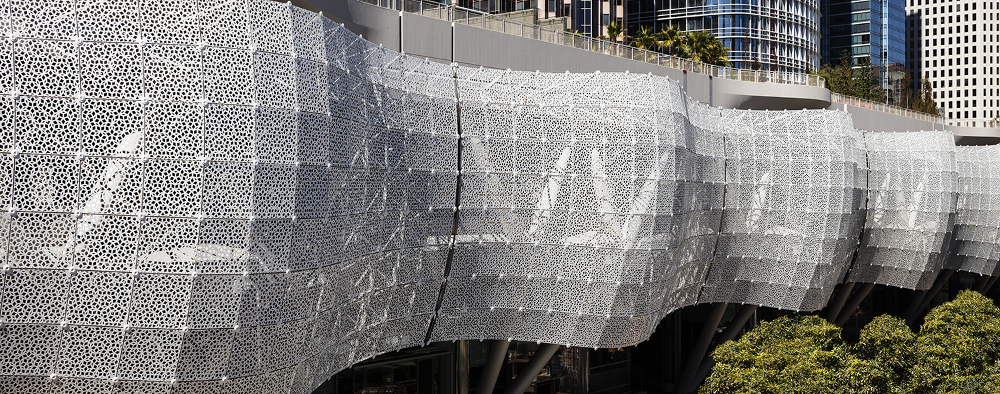

- Software Developer C# - This certification is thru Certiport. This was during my C# II
class. IT covered the foundation of development in C#. MVC architecture, common crud app techniques, and more.
- Web Developer IT Specialist - This certification is thru Certiport and
focused on HTML and CSS - After full semester of Web Dev coursework
- JavaScript IT Specialist - JavaScript certification this was also
preceeded by a semeter of coursework. The semester did focus on frameworks like React
but the certification was mostly based around vanilla javascript OOP in the DOM
- SQL Database IT Specialist - After a semester of my Database course we
took this exam, learned a lot about designing databases, implementing them in the cloud
and using them within projects written in Python but have used SQL in .NET/C# code
bases.
- AWS Cloud Practitioner - Cloud Computing course offered this exam at
the end of the semester. I believe most of the course work was provided by Amazon and
focused on AWS. Learning the meta view of the platform, learning what their products do,
pricing, availability and labs deploying instances with use of some products.
- High School Diploma - Pierce City High School - 3.6 GPA
- Ozark Tech - Currently Enrolled ~3.4 and climbing, based in
Springfield, MO. This is a technical
school while it is small, they have a fantastic program and practical training. I know
for
a fact I have more real world skills, in 2 years, than most bachelor degree students
from much larger
universities.
- Missouri State University - Accepted and waiting to enroll in courses.
Will most likely be going to both institutions simultaneously because some courses to
finish Ozark Tech are only running one semester a year
- Welder/CNC Operator/Fabricator - I worked for Architectural Systems
Incorporated. This was one of my favorite jobs because of what we were building. If you
are familiar with the SalesForce Transit Station, we build the "curtain" which is the
alluminum outter "shell." It's alluminum with geometric cutouts here is a photo. Also
worked on
some of the inner soffit.

- Production Technician - This job spread accross multiple companies,
theaters, and venues. I was mostly contracted but was in charge of the Remingtons Event
Center in Springfield, MO. I was
also able to work in Las Vegas building stages for EDC. These were amazing experiences
that taught me team work, safety, attention to detail and working in a dynamic
environment with a lot going on. I've attached a photo to one of the stages I helped
errect.
It is really hard to put to scale in a photo. One of the most exciting jobs of my life.
- Prepress Technician - I've been at Southern Missouri Containers for
almost 3 years now. I have learned a lot about the manufacturing process. I have
researched "Lean 6 Sigma" practices and it really drives a lot of my projects today.
I know that it was created around manufacturing practices, saving time, logging
everything, doing your best to be as efficeint as possible. I think that is extremely
important. Here I've mostly worked with the production schedule. I meet with supervisors
to ensure we had consistent runs with very little downtime. Providing tools, repairing
tooling, ensuring inks are created correctly, and much more!